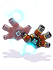
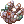
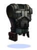

Verus Equipment Exchange
The Charleston Factory has shut down, but it's technology and products still remain with us. You will never find such fine Equipment anywhere else!
The Verus Equipment Exchange can be found in Verus town, just by the entrance of the Charleston Crisis instance. verus04 75/114 The items and equipment found here are exclusive to the Mechanic class.
The materials for these items can be found in the Charleston Crisis.
Mechanic Equipment
Pile Bunker Update Service
Pile Bunker Update service is available at Mass Charleston verus04 65/112.
She can upgrade your regular Pile Bunker to an advanced one developed in the Charleston Factory.
In return, she will ask you for:


| Image | Name | Description |
|---|---|---|

|
Pile Bunker P** | ATK + 450
ATK + 5 every upgrade level of the item. Mechanic only. |

|
Pile Bunker S [1] | ATK + 400
ASPD + 1% per 2 upgrade levels of the item. Mechanic only. |

|
Pile Bunker T [1] | ATK + 400
Reduces the SP cost of skills by 1% every upgrade level of the item. Mechanic only. |
*Please note that regular Pile Bunkers are available at Gomer in Yuno, juno 179/174 for the price of  1 Brocca,
1 Brocca,  250 Steel and 30 Flexible Tube.
250 Steel and 30 Flexible Tube.
**Pile Bunker P also drops from the final boss, Charleston 3, inside the instance.
Reinforced Parts
Sale! The Reinforced Parts - Plate is available now for purchase at a discounted 3,999,999z price at Mass Charleston! verus04 65/112
Most suitable for Mechanics using the amazing technology of the Madogear!
| Image | Name | Description |
|---|---|---|

|
Reinforced Parts - Plate | DEF + 110, Reduces damage received from Small and Medium size enemies by 10%.
Indestructible. If upgrade level is +7 or higher, reduces damage received from Large size enemies by 10%. If upgrade level is +9 or higher, reduces damage received from Small and Medium size enemies by 5%. Set Bonus: Reinforced Parts - Plate, Reinforced Parts - Engine, Reinforced Parts - Booster, Reinforced Parts - Gun Barrel; Arm Cannon damage + 50%. Mechanic only. |

If you wish to slot it, you need a +9  Reinforced Parts - Plate,
Reinforced Parts - Plate,  300 Charleston Component, and talk to Su Winterguard (
300 Charleston Component, and talk to Su Winterguard (@navi verus04 117 132) to upgrade it.
Careful - Refines and enchants will be lost when adding the slot.
The rest of the Reinforced set is available for a whooping,  10 Charleston Component price at Mass Charleston! (
10 Charleston Component price at Mass Charleston! (@navi verus04 69 109)
| Image | Name | Description |
|---|---|---|

|
Reinforced Parts - Engine [1] | DEF + 25, Cast Delay - 10%
If upgrade level is +7 or higher, reduces damage received from Neutral property attacks by 10%. If upgrade level is +9 or higher, Cast Delay - 10% Set Bonus: Reinforced Parts - Plate, Reinforced Parts - Engine, Reinforced Parts - Booster, Reinforced Parts - Gun Barrel; Arm Cannon damage + 50%. Mechanic only. |
| Reinforced Parts - Booster [1] | DEF + 23, Reduces the SP cost of Hover by 15.
If upgrade level is +7 or higher, reduces the SP cost of Acceleration by 20. Set Bonus: Reinforced Parts - Plate, Reinforced Parts - Engine, Reinforced Parts - Booster, Reinforced Parts - Gun Barrel; Arm Cannon damage + 50%. Mechanic only. | |
|  | Reinforced Parts - Gun Barrel [1] | ATK + 4%
HIT + 10 Knuckle Boost damage +25%. Set Bonus: Reinforced Parts - Plate, Reinforced Parts - Engine, Reinforced Parts - Booster, Reinforced Parts - Gun Barrel; Arm Cannon damage + 50%. Mechanic only. |
Supplement Parts
Sale! The STR Supplement Equipment is available now for purchase at a discounted 3,999,999z price at Mass Charleston! verus04 65/112
Most suitable for Mechanics choosing the classic, fighter path!
| Image | Name | Description |
|---|---|---|

|
STR Supplement Equipment | DEF + 80, ATK + 5%.
ATK + 1% every 4 upgrade levels of the item. Set Bonus: AGI Supplement Equipment & STR Supplement Equipment; ATK + 30. Set Bonus: VIT Supplement Equipment & STR Supplement Equipment; Axe Tornado damage +25%. Set Bonus: DEX Supplement Equipment & STR Supplement Equipment; Axe Boomerang damage + 100%. Mechanic only. |
If you wish to slot it, you need a +9  STR Supplement Equipment, 300 Charleston Component, and talk to Su Winterguard (
STR Supplement Equipment, 300 Charleston Component, and talk to Su Winterguard (@navi verus04 117 132) to upgrade it.
Careful - Refines and enchants will be lost when adding the slot.
The rest of the Supplement set is available for a whooping, 10 Charleston Component price at Mass Charleston verus04 69/109
| Image | Name | Description |
|---|---|---|

|
VIT Supplement Equipment [1] | DEF + 20, Max HP + 6%.
Max HP + 1% every 2 upgrade levels of the item. If upgrade level is +9 or higher, HP Recovery + 50% Set Bonus: VIT Supplement Equipment & STR Supplement Equipment; Axe Tornado damage +25%. Mechanic only. |
| AGI Supplement Equipment [1] | DEF + 25, ASPD + 6%.
Max HP + 1% every 2 upgrade levels of the item. If upgrade level is +4 or higher, ASPD + 1%. Set Bonus: AGI Supplement Equipment & STR Supplement Equipment; ATK +30. Mechanic only. | |
| DEX Supplement Equipment [1] | Cast Delay - 10%.
Variable Casting Time - 10%. Reduces the SP cost of skills by 10%. Set Bonus: DEX Supplement Equipment & STR Supplement Equipment: Axe Boomerang damage +100%. Reduces the cooldown of Axe Boomerang by 2 seconds. Mechanic only. |
Enchantments
The Mechanic items listed above can be enchanted by talking with Mass Charleston (verus04,71,106). Enchanting an item or resetting the enchants costs 1 Charleston Component and 100,000 zeny.
For armor, garment, and shoes, enchantments can be done in 3 slots.
- 4th slot has 100% success chance
- 3rd slot has chance of failure (resetting all enchant when failed),
- 2nd slot has chance of failure (either resetting all enchant or breaking the gear). (In NovaRO at the moment there is absolutely no chance of gear breaking for Verus enchants.)
If the item is refined to +9 or higher, additional enchantment options become available.
| Items | Enchants Possible | +8 below Enchantment list option | +9 Enchantment list options | |
|---|---|---|---|---|
| Regular Upgrade | Superior Upgrade | |||
 Reinforced Parts - Booster [1] Reinforced Parts - Booster [1]
|
3 | STR / AGI / VIT / DEX 1~2, Spell 1, ASPD Lv.1 |
STR / AGI / VIT / DEX 2~3, Spell 1~2, ASPD Lv.1~2 | |
 AGI Supplement Equipment [1] AGI Supplement Equipment [1]
|
3 | STR / AGI / VIT / DEX 1~2, ASPD Lv.1 |
STR / AGI / VIT / DEX 2~3, ASPD Lv.1~2 | |
|  Reinforced Parts - Engine [1] | 3 | STR / AGI / VIT / DEX / LUK 1~2, Expert Archer 1 |
STR / AGI / VIT / INT / DEX / LUK 2~3, Expert Archer 1~3 | |
 VIT Supplement Equipment [1] VIT Supplement Equipment [1]
|
3 | STR / AGI / VIT / INT / DEX / LUK 1~2, Expert Archer 1 |
STR / AGI / VIT / INT / DEX / LUK 2~3, Expert Archer 1~3 | |
 Reinforced Parts - Plate Reinforced Parts - Plate
|
3 | AGI / LUK 1~2, ASPD Lv.1~2, Flee 3~12 |
Speed: AGI / LUK 2~3, ASPD Lv.1~2, Flee 3~12 |
Attack: STR / DEX 2~3, Fighting Spirit 1-2, Expert Archer 1~3 |
 STR Supplement Equipment STR Supplement Equipment
|
3 | AGI / LUK 1~3, ASPD Lv.1~2, Flee 3~12 |
Speed: AGI / LUK 2~3, ASPD Lv.1~2, Flee 3~12 |
Defense: VIT 2~3, MHP 1~3%, Neutral Resist 1~2, DEF 6~9 |
 Reinforced Parts - Gun Barrel [1] Reinforced Parts - Gun Barrel [1]
|
2 | STR / AGI / VIT / INT / DEX 1~2, Spell 1~2, ASPD Lv.1 |
n/a | |
 DEX Supplement Equipment [1] DEX Supplement Equipment [1]
|
2 | STR / AGI / VIT / INT / DEX 1~2, Spell 1~2, ASPD Lv.1 |
n/a | |
Excellion Set
The Excellion set is an armor group created from lost technology of a ruined laboratory, consisting of a suit and garment. Unlike other Verus equipment, these can be used by every job and have a level requirement of 99 to equip. They are highly customizable by using reactor blueprints to enchant each piece. The quest for Excellion equipment begins at Verus (/navi verus04 164/218).
Firstly, speak with MARS_01 and supply it with  1 Old Fuel Tank to get both units up and running. Afterwards, MARS_01 will enchant your Excellion gears.
1 Old Fuel Tank to get both units up and running. Afterwards, MARS_01 will enchant your Excellion gears.
PLUTO_09 will make Excellion gears and produce reactor blueprints (enchants). For  10 Huge Metal Scraps and 5 Old Fuel Tanks, PLUTO_09 will give one of
10 Huge Metal Scraps and 5 Old Fuel Tanks, PLUTO_09 will give one of  Excellion Suit or
Excellion Suit or  Excellion Wing at random.
Excellion Wing at random.
| Image | Name | Description |
|---|---|---|
|  | Excellion Suit | A power suit made from the lost technology of a ruined laboratory.
VIT + 6. If level 130 or above, additional VIT + 4. Increase Max HP by 4% for every 3 refine upgrades. This item is indestructible in battle.
|

|
Excellion Wing | A power wing made from the lost technology of a ruined laboratory.
Perfect Dodge + 8. If level 130 or above, additional Perfect Dodge + 2. Increase Flee by 2 for every refine upgrade. |
Enchantments
The Excellion set can be enchanted by using reactor blueprints created by PLUTO_09. To create a blueprint, you must supply 5 Old Fuel Tanks. PLUTO_09 will give you a random reactor blueprint or fail to create one entirely.
With an Excellion armor piece and blueprints in your inventory, you can then speak to MARS_01 to apply them as desired. The enchanting process consumes the blueprint, but will never fail. Each Excellion Suit and Wing may only have 3 maximum enchants. Carefree ASPD Reactor is the only Blueprint which adds a Carefree prefix for reasons unknown regardless of the slot it is in.
The following table lists the available blueprints, their effects and their enchantment limitations.
| Reactor | Blueprint | Effect | Location | Max Count |
|---|---|---|---|---|
 Fire Property Reactor Fire Property Reactor
|
 Fire Property Blueprint Fire Property Blueprint
|
Enchant an armor with fire property. | Suit | 1 |
 Water Property Reactor Water Property Reactor
|
 Water Property Blueprint Water Property Blueprint
|
Enchant an armor with water property. | Suit | 1 |
| Earth Property Reactor |  Earth Property Blueprint Earth Property Blueprint
|
Enchant an armor with earth property. | Suit | 1 |
 Wind Property Reactor Wind Property Reactor
|
 Wind Property Blueprint Wind Property Blueprint
|
Enchant an armor with wind property. | Suit | 1 |
 Fire Resistance Reactor Fire Resistance Reactor
|
 Fire Resistance Blueprint Fire Resistance Blueprint
|
Reduce damage from fire property by 25%. Receive more damage from water property by 25%. | Wing | 3 |
 Water Resistance Reactor Water Resistance Reactor
|
Water Resistance Blueprint | Reduce damage from water property by 25%. Receive more damage from wind property by 25%. | Wing | 3 |
 Earth Resistance Reactor Earth Resistance Reactor
|
 Earth Resistance Blueprint Earth Resistance Blueprint
|
Reduce damage from earth property by 25%. Receive more damage from fire property by 25%. | Wing | 3 |
 Wind Resistance Reactor Wind Resistance Reactor
|
 Wind Resistance Blueprint Wind Resistance Blueprint
|
Reduce damage from wind property by 25%. Receive more damage from earth property by 25%. | Wing | 3 |
 Recovery 101 Reactor Recovery 101 Reactor
|
 Recovery 101 Blueprint Recovery 101 Blueprint
|
Restore 50 HP every 5 seconds. If refine is 7 or higher, gives an additional 50 HP every 5 seconds. | Both | 3 |
 Recovery 102 Reactor Recovery 102 Reactor
|
 Recovery 102 Blueprint Recovery 102 Blueprint
|
Restore 3 SP every 5 seconds. If refine rate is 7 or higher, gives an additional 2 SP every 5 seconds. | Both | 3 |
| Recovery 201 Reactor |  Recovery 201 Blueprint Recovery 201 Blueprint
|
Increase HP recovery rate by 50%. When refine rate is 7 or higher, further increase HP recovery rate by 50%. | Both | 3 |
 Recovery 202 Reactor Recovery 202 Reactor
|
 Recovery 202 Blueprint Recovery 202 Blueprint
|
Increase SP recovery rate by 50%. When refine rate is 7 or higher, further increase SP recovery rate by 50%. | Both | 3 |
 STR Supplement Reactor STR Supplement Reactor
|
 STR Supplement Blueprint STR Supplement Blueprint
|
ATK +5 for every 10 base STR. When refine rate is 7 or higher, add an additional ATK +10. | Suit | 1 |
 INT Supplement Reactor INT Supplement Reactor
|
 INT Supplement Blueprint INT Supplement Blueprint
|
MATK +5 for every 10 base INT. When refine rate is 7 or higher, add an additional MATK +10. | Suit | 1 |
| DEF Supplement Reactor |  DEF Supplement Blueprint DEF Supplement Blueprint
|
DEF +100. | Both | 3 |
 PD Supplement Reactor PD Supplement Reactor
|
 PD Supplement Blueprint PD Supplement Blueprint
|
Perfect Dodge +3. | Both | 1 |
 Attack Supplement Reactor Attack Supplement Reactor
|
 Attack Supplement Blueprint Attack Supplement Blueprint
|
ATK +20. | Both | 3 |
 Magic Supplement Reactor Magic Supplement Reactor
|
 Magic Supplement Blueprint Magic Supplement Blueprint
|
MATK +20. | Both | 3 |
 HP Supplement Reactor HP Supplement Reactor
|
 HP Supplement Blueprint HP Supplement Blueprint
|
Max HP +5%. | Both | 3 |
 SP Supplement Reactor SP Supplement Reactor
|
SP Supplement Blueprint | Max SP +3%. | Both | 3 |
 Frozen Supplement Reactor Frozen Supplement Reactor
|
 Frozen Supplement Blueprint Frozen Supplement Blueprint
|
Grants immunity to being frozen. | Suit | 1 |
 ASPD Supplement Reactor ASPD Supplement Reactor
|
 ASPD Supplement Blueprint ASPD Supplement Blueprint
|
ASPD +1. | Both | 1 |